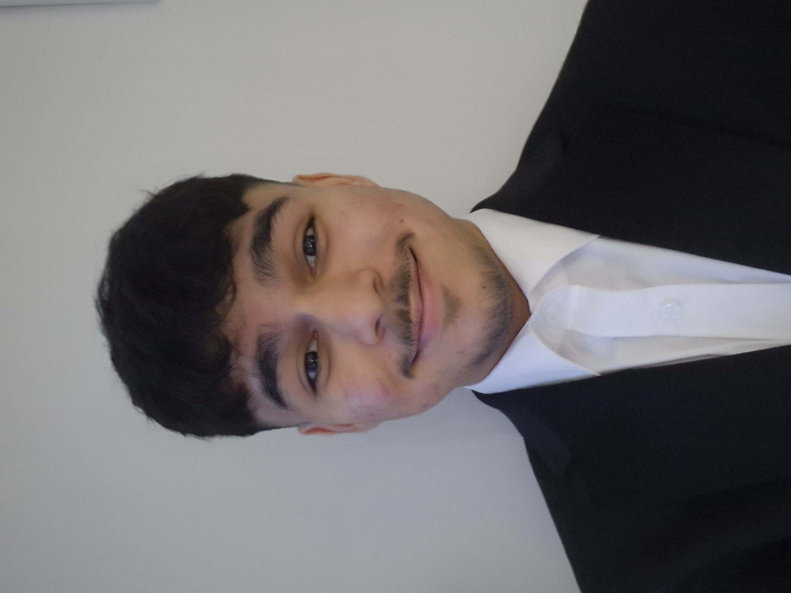

About Me

I'm Ronak Visram, a Computer Science student at Queen Mary University of London (QMUL). My journey in technology is just beginning, but I'm already excited about the potential it holds to shape the world around us. Balancing my studies with a job at a pharmacy has been a rewarding challenge — it's taught me the importance of communication, adaptability, and attention to detail.
Working in a pharmacy has also given me insight into the real-world impact of precision and problem-solving. I've seen how strong teamwork and careful attention can make a genuine difference, and I hope to bring those qualities into my future career. My goal is to contribute to innovative solutions that solve real-world problems and improve people's lives.
I'm determined to keep pushing forward, gaining hands-on experience, and building a unique path in the tech industry. This is just the beginning of my story, and I can't wait to see where my curiosity and ambition will take me.